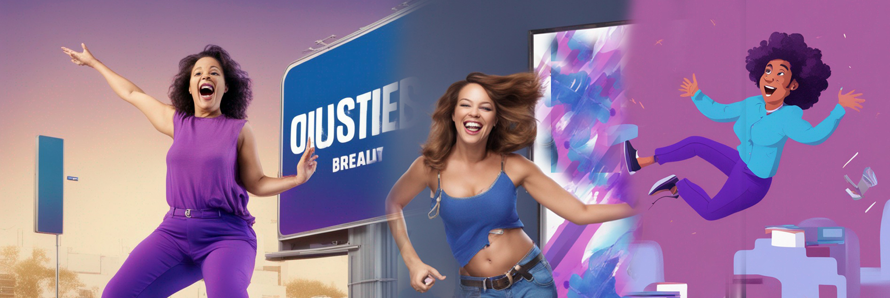

Elevating Brands
Shaping Stories
Building Legacies !!!

From the inception of your business, we at IBConcept Design Agency embark on a journey that defines your brand's visual identity. Our prowess in Visual and Graphic Design resonates in crafting designs that range from impactful posters that resonate with your target audience, to banners that influence decisions. We excel in creating visuals that are not only eye-catching but also backed by compelling content, creating a powerful blend that captures attention and leaves a lasting impression. Harnessing the allure of memes and incorporating them into our designs, we leverage popular culture to further enhance engagement and brand resonance.
As your brand's narrative unfolds, we delve into the realm of print and web design, meticulously crafting office interiors that inspire both customers and clients. Our expertise extends to creating thought-provoking visual logos that embody your company's essence, each one a masterpiece in its own right. With AI-generated images and access to an array of free stock images, our designs are boundless, taking inspiration from both technology and artistry.
Our services don't stop at static visuals; we are adept in video and graphic design, breathing life into your brand story through engaging video content. Seamless video editing and captivating photography serve to elevate your brand's image, creating a sense of authenticity and relatability. This journey, however, is not one embarked upon alone. Our brand consultation services guide you at every turn, rooted in customer research and an unwavering focus on user touchpoints. From strategic social media optimization to recurrent postings that keep your audience engaged, we facilitate a continuous connection, ensuring your brand remains relevant active, and in sync with your evolving narrative.
Step by step, from the very inception to the maintenance of a thriving online presence, IBConcept Design Agency weaves your brand's story. Our commitment to excellence drives us to innovate, from crafting an initial logo to the creation of a dynamic website, and onward to promotional marketing items. Iteration and maintaining touchpoints remain at the heart of our approach, ensuring that your brand's journey continues to resonate and flourish in the digital age.